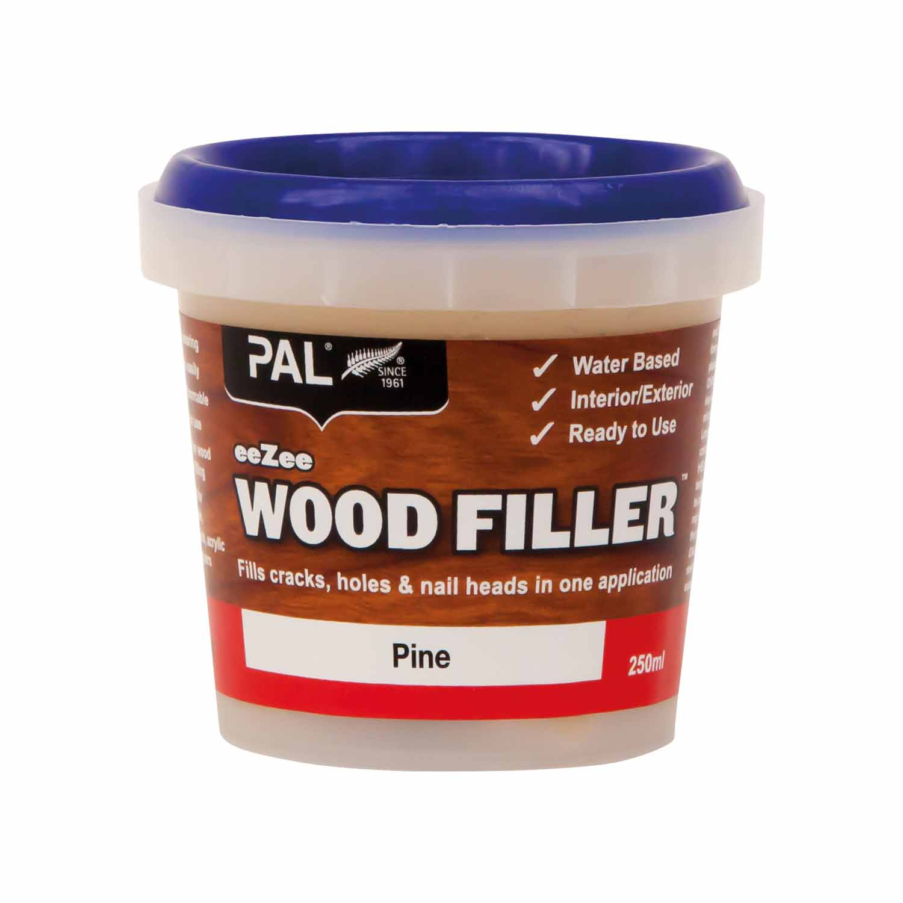

Russell Johnson
About Assesment
This website has been developed as part of Yoobee Colleges Level 6 Web and UX design course for my formative 3-1 assignment. I have been tasked with creating a single page application that allows the user to browse items retrieved from an external API, specifically NewsAPI.org.
The application needs to show news stories from around the world while also allowing the user to be able to make a selection for filtering categories and a search function.
Website Process
- Began by loading all Grunt.js packages
- Created html template with for results
- Created ajax function to output news information
- Tested api key by logging news.articles
- Created basic card output
- Began working on filtering via country
- Created 2 variables
- var country;
- var countryCode;
- Gather value from selected country and store in country variable
- Created if condition that changes the user's inputs into countryCode from an array
- Created condition to make sure the user has selected a country from drop down select
- Began working on filtering via category
- Created another 2 variables
- var category;
- var categoryCode;
- Gather value from selected category and store in category variable
- Created if condition that changes the user's inputs into categoryCode from an array
- Created condition to make sure the user has selected a category from drop down select
- Add country and category code variables to url to change dynamically from user input
- Add in search function that query searches the NewsAPI
- Clears article page and displays all articles with the keywords
- Added loading animation using bootstrap